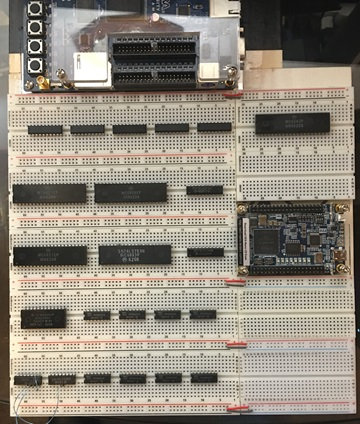

6/16/2024 1:00 AM: -- Breadboard CoCo 1/2

The primary goal is to learn. I've made progress lately w/ re-learning what I once knew from back in the day, to learning for the first time; electronics and FPGA technology. I've made good progress with interfacing FPGA development boards with various external components including CPU's and external SRAM.
In addition, I would like to learn the CoCo 1/2 & 3 hardware and software technology backwards and forewards -- like never before.
My intent is to blog and post my progress to this website and to GitHub. I'm toying w/ the idea of making YouTube videos. The project is going to be open source, both hardware and software. I encourage anyone to follow along (possibly help out) build anything I make for yourself, your friend, or to sell to total strangers on eBay. I might even buy one. Whatever you wish!!
As a secondary goal I'd like to recreate the CoCo motherboards. But not exact duplicates. Who's done a magnificent job at that is Rocky Hill. Check out his YouTube here: Rocky Hill. He's got everything up on GitHub as well. Kudos to him!
Instead I want my clone(s) to be modernized to a certain degree: I'm not talking about hanging a ~$4k 64 core AMD Ryzen processor off the thing either. Those of us that were into CoCo's in the early 80's couldn't fathom such a thing could we?
First of all, I really want it be a CoCo 1/2 & 3 in one. I know the CoCo3 is basically CoCo1/2 compatible already, minus some semi-graphics text. But sometimes you want the limitations of the original machine. Also, I want the CoCo itself to be upgraded to a certain point. Not to a full CoCo4 at this point (it's my belief that a CoCo4 would be a 6809/68k combo fully compatible w/ the CoCo3), instead more like a CoCo 1/2+ / 3+. With memory, sound / VDG / GIME / SD Card / UART / etc ... upgrades built in. But still be 100% fully compatible w/ software and hardware.
I would like the core digital electronics to be the core old-school chips. As I make progress on the proof of concept, I'll go over what that means in more depth. I'm not sure how far I can push that.
And indeed it's possible that a CoCo 1/2+ and CoCo 3+ end up being two separate projects.
It depends how complex it is to include the SAM and the MC6847 and still have a GIME implemented in FPGA on top of those real chips. That would be theoretically like taking a CoCo2 making mods to the circuit and adding an FPGA to make it CoCo3 compatible. It really boils down to how much of the data & address bus can be controlled between those real chips and the FPGA.
My initial plan is not to be re-using a real GIME chip in this project. CoCo3's are already expensive and the GIME's are getting more and more rare.
However, for sure I am positive that if I take the old-school chips that are the same, between the CoCo1/2 and the CoCo3 and implement the rest in FPGA fabric that is totally doable. Which really boils down to just the CPU and the two 6821 PIA chips, right? It means the SAM / MC6847 from the CoCo2 and GIME from the CoCo3 are done in the FPGA. This scenario would still mean that the cartridge bus, and CoCo2/3 PIA's controlling the Keyboard / Joysticks / Cassette I/O, sound DAC / serial bit-banger... etc... remain the *real* retro digital electronics (will be using modern replacements for the actual analog stuff where it makes sense).
And I've learned enough FPGA programming that (I think) I can make that happen.
Final Goals:
- A CoCo 1/2+ / 3+ motherboard (ideally as drop in replacements into CoCo1 cases, CoCo2 cases, or CoCo3 cases. And perhaps a Micro ATX version? Or maybe *only* that version?)
- Same I/O ports and cartridge bus 100% compatible w/ CoCo 1/2/3
- Retro mode where none of the FPGA enhancements are available. However, FPGA that re-implements original functionality in the FPGA will be available (for example standard GIME functions)
- Ability to switch between a CoCo 1/2 or CoCo 3 modes. (*ify*)
I'll flesh out the final goals as I make progress ... but the first step is to create an accurate CoCo 1/2 on a breadboard and 1) see if I can actually do it? And 2) see what I can interface to it w/ FPGA. 3) Learn.